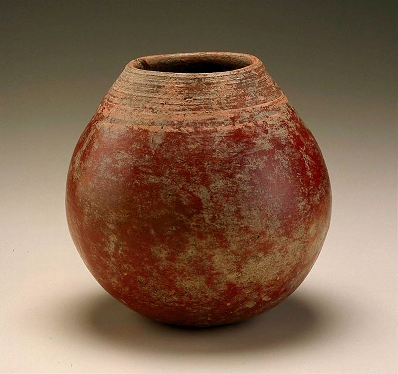

Sketch 13 (but keep line lengths from getting too large!) 
Hello float that we have missed. Hello pot, you are beautiful. Hello red, hello roundness, hello you are from the Smithsonian and are record ID nmafa_89-13-27. We'll put a canvas in there instead of an image and see what happens. Just putting more text here.